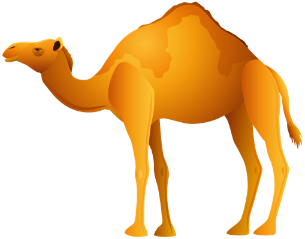

Camel - Consumer
Camels are one of the most iconic animals found in the arid regions of the world due to their remarkable adaptive characteristics.
These magnificent animals have developed various physical, behavioral, and physiological adaptations to survive in the harsh desert
environment. Camels are renowned for their water conservation abilities and their humps, but their adaptations go far beyond that.
Camels play a crucial role in desert ecosystems by serving as reliable modes of transportation, providing nutritious milk and lean meat,
offering tourism opportunities, contributing to therapy practices, and showcasing remarkable adaptations that enable their survival in harsh
conditions. Physiologically, camels excel at water conservation through efficient kidneys and specialized nasal passages, allowing them to endure
long periods without drinking. Their ability to regulate body temperature, walk on hot sand with rubbery pads, and withstand extreme heat
showcases their physical resilience. Behaviorally, camels exhibit socialization, foraging, communication, and resilience traits that aid in
their survival, highlighting their multifaceted importance in desert regions.
Cactus - Producer
A cactus is a member of the plant family Cactaceae, a family comprising about 127 genera with some 1,750 known species of the order Caryophyllales.
Cacti are an essential part of the desert ecosystem. They provide homes and shelter for a wide variety of animals, and their roots help to stabilize
the soil. Cacti also play an important role in the water cycle by absorbing and storing water.
Cacti are an essential part of the desert ecosystem. They provide homes and shelter for a wide variety of animals, and their roots help to stabilize
the soil. Cacti also play an important role in the water cycle by absorbing and storing water.
Sunlight - Abiotic Factor
Sunlight, also known as solar radiation, refers to the incoming light to the Earth that originated from the Sun.
Desert humidity is usually so low that not enough water vapor exists to form clouds. The sun’s rays beat down through
cloudless skies and bake the land. The ground heats the air so much that air rises in waves you can actually see.
Desert humidity is usually so low that not enough water vapor exists to form clouds. The sun’s rays beat down through
cloudless skies and bake the land. The ground heats the air so much that air rises in waves you can actually see.
Tumbleweed - Producer
A tumbleweed is a structural part of the above-ground anatomy of a number of species of plants. It is a diaspore
that, once mature and dry, detaches from its root or stem and rolls due to the force of the wind. In most such species,
the tumbleweed is in effect the entire plant apart from the root system, but in other plants, a hollow fruit or
inflorescence might detach instead.
Snake - Consumer
Snakes are reptiles that often inhabit desert environments. They are predators,
feeding on smaller animals such as rodents, lizards, and insects.
Scorpion - Consumer
Scorpions are predatory arachnids of the order Scorpiones. They have eight legs and are easily recognized by a pair of
grasping pincers and a narrow, segmented tail, often carried in a characteristic forward curve over the back and always ending
with a stinger. Snakes help maintain balance in desert ecosystems by preying on rodents, which can otherwise reproduce rapidly and become
pests.
Benefits:
Control of pests: By feeding on insects and other arthropods, scorpions assist in regulating their numbers and preserving the
natural equilibrium of desert ecosystems.
Food source: A variety of desert animals, including as birds, mammals, and other arachnids, rely heavily on scorpions for
their sustenance. They sustain biodiversity and add to the food web.
Adaptations to desert life: Scorpions' amazing adaptations to thrive in the harsh desert environment include
their capacity to endure extremely high temperatures and preserve water. Researching these adaptations can shed light
on the ecology of the desert and stimulate the development of biomimetic materials and technologies.
Ant - Consumer
Ants are social insects found in virtually all terrestrial environments, including deserts. They live in colonies
and perform various ecological functions, such as seed dispersal, soil aeration, and nutrient cycling.
Seed dispersal: Ants play a vital role in dispersing seeds of many desert plants. Some plants have specialized structures
called elaiosomes, which attract ants. Ants carry these seeds to their nests, consume the elaiosomes, and discard the intact
seeds in nutrient-rich locations, facilitating their germination and growth.
Fungi - Decomposer
a diverse group of organisms that play a crucial role in decomposition in the desert ecosystem.
They secrete enzymes to break down complex organic matter, such as dead plant material and animal remains, into simpler nutrients. Fungi form symbiotic relationships with plant roots, known as mycorrhizae, helping plants absorb water and nutrients from the soil in exchange for carbohydrates.
In the desert, fungi are particularly important for nutrient cycling and soil health, contributing to the availability of essential nutrients for plants and other organisms.

Bacteria - Decomposer
are single-celled microorganisms that are abundant in the desert ecosystem and play a vital role in decomposition.
They break down organic matter, such as dead plants, animals, and fecal matter, into simpler compounds, releasing nutrients like nitrogen, phosphorus, and potassium back into the soil.
Some bacteria form mutualistic relationships with plants, helping them fix nitrogen from the atmosphere, which is essential for plant growth in nutrient-poor desert soils.
Bacteria are also involved in various other processes, such as nutrient cycling, nitrogen fixation, and soil formation, contributing to the overall health and functioning of the desert ecosystem.

Oasis - Abiotic Factor
Oasis is a lush green area in the middle of a desert, centered around a natural spring
or a well. It is almost a reverse island, in a sense, because it is a tiny area of water surrounded
by a sea of sand or rock. Oases can be fairly easy to spot—at least in deserts that do not have
towering sand dunes. In many cases, the oasis will be the only place where trees such as date
palms grow for miles around. For centuries, the sight of an oasis on the horizon has been a very
welcome one for desert travelers.
GROUP 1
MEMBERS:
Campos, Charles
Gutierrez, Jodie Lyn
Natividad, Aaron William
Nefulda, Cenex
Neri, Ryan
Oliveros, Ryane
Palsimon, Mark Vincent
Roces, Raiza